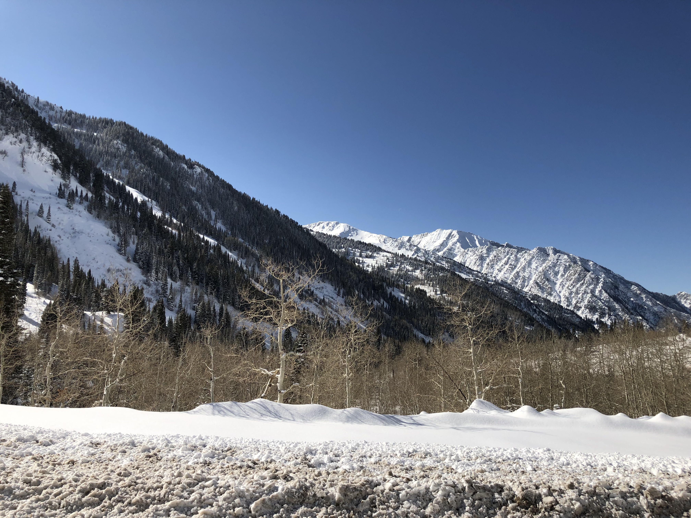
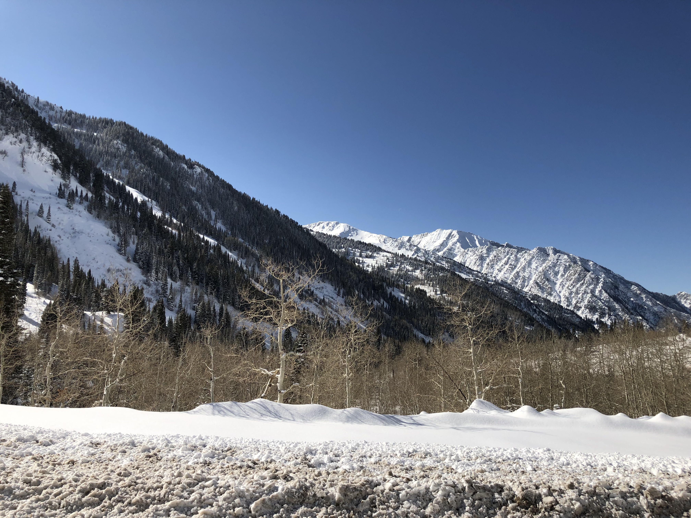

Exploring features of Utah
Utah is well known for its salty lakes, national parks, and skiing mountains. But these are not the only things that Utah has to offer. After spending two weeks in Clearfield, Utah I saw so much and learned unique things. Including In 2002 Salt Lake City, Utah hosted the Winter Olympic Games. Utah is a well known tourist spot for Mormons and is believed to be a very religious place. Utah is also home to the Hill Air Force Base. Where young men and women work hard to keep the planes in top shape and equipment up to date.

 

Over a hundred hiking trails are spread all over the state. Winding up and down the mountains and showing the crisp blue skies. These trails are full of wild flowers, some have boulders, and believe it or not a few trails have abandoned cars. No one is exactly sure how these vehicles came to be in the woods of these mountains but it is fun to see how nature has been growing around the parts. Hikers who travel these paths often lay flowers on the cars in honor of those who have died in car accidents.